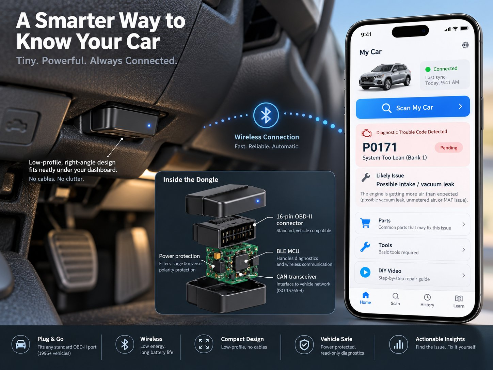

OBD BLE Dongle — Interactive Build Guide
A read-only OBD-II → Bluetooth Low Energy dongle, built bench-first: prove the electronics and firmware on the bench, connect it to a real car safely, pair it with the phone app, then shrink it into the low-profile production puck. Check off steps as you go.

1 · Bench assembly
Goal: wire the ESP32 DevKit + Adafruit CAN Pal + OBD breakout on the bench. Prove continuity, no shorts, termination OFF — before any firmware or any car.
Parts for this stage
OBD-II pins used
| J1962 pin | Signal | Use |
|---|---|---|
| 4 | Chassis ground | Ground reference |
| 5 | Signal ground | Ground reference |
| 6 | CAN-H | ISO 15765-4 high line |
| 14 | CAN-L | ISO 15765-4 low line |
| 16 | Battery + | Leave disconnected during the first communication test. Used later for standalone power only. |
Bench wiring
| ESP32 DevKit | CAN Pal | OBD breakout | Notes |
|---|---|---|---|
| 3V3 | Vcc | — | CAN Pal logic supply |
| GND | GND | pins 4 + 5 | Common reference |
| GPIO 21 | TX | — | TWAI transmit |
| GPIO 22 | RX | — | TWAI receive |
| — | CANH | pin 6 | CAN high |
| — | CANL | pin 14 | CAN low |
| GND / low | SLNT | — | Normal transmit mode |
| — | Termination switch OFF | — | Vehicle already has its termination |
Assembly steps
2 · Firmware bring-up
Goal: first read-only CAN test — request engine RPM (Mode 01 PID 0C), decode it, probe all four ISO 15765-4 protocol combinations, then implement ISO-TP multi-frame receive with flow control (VIN is the acceptance test).
Parts for this stage
Step 1 — TWAI init + first RPM read
Standard ISO-TP single-frame request for Mode 01 PID 0C, using the common 11-bit functional ID 0x7DF. Copy into your ESP-IDF project:
#include <stdio.h>
#include "driver/twai.h"
#include "esp_log.h"
#define TX_GPIO GPIO_NUM_21
#define RX_GPIO GPIO_NUM_22
static const char *TAG = "obd";
static void can_init_500k(void) {
twai_general_config_t g =
TWAI_GENERAL_CONFIG_DEFAULT(TX_GPIO, RX_GPIO, TWAI_MODE_NORMAL);
twai_timing_config_t t = TWAI_TIMING_CONFIG_500KBITS();
twai_filter_config_t f = TWAI_FILTER_CONFIG_ACCEPT_ALL();
ESP_ERROR_CHECK(twai_driver_install(&g, &t, &f));
ESP_ERROR_CHECK(twai_start());
}
static esp_err_t obd_send_mode01_pid(uint8_t pid) {
twai_message_t m = {0};
m.identifier = 0x7DF; // functional OBD request, 11-bit
m.data_length_code = 8;
m.data[0] = 0x02; // 2-byte payload follows
m.data[1] = 0x01; // Mode 01: current data
m.data[2] = pid;
for (int i=3; i<8; ++i) m.data[i] = 0x00;
return twai_transmit(&m, pdMS_TO_TICKS(100));
}
static void wait_for_rpm(void) {
twai_message_t r;
int64_t deadline = esp_timer_get_time() + 1000000;
while (esp_timer_get_time() < deadline) {
if (twai_receive(&r, pdMS_TO_TICKS(100)) != ESP_OK) continue;
if (r.identifier >= 0x7E8 && r.identifier <= 0x7EF &&
r.data_length_code == 8 &&
r.data[1] == 0x41 && r.data[2] == 0x0C) {
uint16_t raw = ((uint16_t)r.data[3] << 8) | r.data[4];
float rpm = raw / 4.0f;
ESP_LOGI(TAG, "RPM %.1f from ECU 0x%03lX",
rpm, (unsigned long)r.identifier);
return;
}
}
ESP_LOGW(TAG, "No RPM response");
}
void app_main(void) {
can_init_500k();
ESP_ERROR_CHECK(obd_send_mode01_pid(0x0C));
wait_for_rpm();
}Step 2 — protocol probing
ISO 15765-4 allows 250 or 500 kbit/s with 11- or 29-bit identifiers — four standard combinations. Start with 11-bit / 500 kbit/s (the common one). If no valid reply, stop the TWAI driver and try the remaining combinations rather than guessing proprietary settings.
Step 3 — VIN is multi-frame: ISO-TP done correctly
A 17-character VIN usually needs a multi-frame ISO-TP response. After receiving a First Frame, the dongle must transmit a Flow Control frame to the responding ECU — transport-layer control, not an actuator command. If the response arrived on 0x7E8, the matching physical tester request is 0x7E0:
// Minimal "continue to send" flow-control frame:
static esp_err_t send_flow_control(uint32_t response_id) {
twai_message_t fc = {0};
fc.identifier = response_id - 8; // e.g. 0x7E8 -> 0x7E0
fc.data_length_code = 8;
fc.data[0] = 0x30; // Flow Status = Continue To Send
fc.data[1] = 0x00; // Block Size = 0 (unlimited until complete)
fc.data[2] = 0x00; // STmin = 0
return twai_transmit(&fc, pdMS_TO_TICKS(100));
}For production, move ISO-TP into a dedicated module tracking ECU ID, sequence numbers, total expected payload length, timeout, and frame order. Never concatenate responses from different ECU IDs.
Step 4 — read-only service allowlist
| Operation | Service | MVP rule |
|---|---|---|
| Current PIDs | 01 | Allow selected PID list only |
| Freeze frame | 02 | Add once parser is tested |
| Confirmed DTCs | 03 | Allow |
| Clear DTCs | 04 | Refuse |
| On-board monitor tests | 06 | Later: allow selected monitor reads |
| Pending DTCs | 07 | Allow |
| Vehicle information / VIN | 09 | Allow selected PIDs |
| Permanent DTCs | 0A | Allow |
3 · Vehicle connection
Goal: prove the scanner on a real parked car — USB-powered first, pin 16 last. Do these in order.
4 · Phone integration
Goal: a minimal BLE GATT service (one write, one notify characteristic) carrying semantic diagnostic requests — not raw CAN. Prove it with nRF Connect before touching the Android app.
Parts for this stage
Message model
// Phone -> dongle
{"v":1,"id":"42","op":"read_pid","pid":"0C"}
// Dongle -> phone
{"v":1,"id":"42","ok":true,"data":{"pid":"0C","value":742.0,"unit":"rpm"}}
// Refused operation
{"v":1,"id":"43","ok":false,"error":"ERROR_FORBIDDEN_COMMAND"}Firmware should expose operations like read_vin, read_dtcs_confirmed, read_dtcs_pending, read_dtcs_permanent, read_pid, and later read_freeze_frame. It must not expose an operation like send_can_frame.
Bring-up steps
read_pid 0C, gets an rpm notification back; anything outside the allowlist returns ERROR_FORBIDDEN_COMMAND; no raw-CAN BLE API exists anywhere.5 · Custom Rev A PCB
Goal: shrink the bench prototype into a low-profile puck: ESP32-C3-MINI-1 + TCAN3404-Q1 + LM5164-Q1 + automotive protection + right-angle J1962 connector. Don't start this until the bench build works end to end.
Parts for this stage
Block diagram
12–14.4 V
3.3 V
PCB layout checklist
Suggested PCB partition
[J1962 connector]
| CAN pins | battery pin
| |
[ESD] [PTC/TVS/reverse]
| |
[TCAN3404] [LM5164]
\ /
\ 3V3 /
[ESP32-C3-MINI-1] ---- antenna edge/keep-out
|
test pads6 · Production path
Goal: prove Rev A, then cost down — never the reverse. The cheap product is a consequence of a working design, not the thing that prevents the first design from working.
Rev A release checks
Stage roadmap
| Stage | Goal | Hardware philosophy |
|---|---|---|
| Bench | Prove OBD ↔ phone ↔ diagnostic engine | Modules, jumper wires, external USB power |
| Rev A | Prove vehicle-powered compact board | Certified radio module + automotive CAN + automotive buck |
| Rev B | Drive cost and size down | Bare MCU, tuned antenna, smaller packages, production connector |
| Pilot | 50–500 real units | Environmental, sleep-current, return-rate and compatibility data |
| Retail | Large-volume giveaway | DFM, automated programming/test, molded shell, secure provisioning |
Only after Rev A works should the module be replaced by a bare ESP32-class SoC and discrete RF section — that saves money and PCB area but creates RF-layout, antenna-tuning, and certification work.
Troubleshooting reference
Goal: one table for the whole build. Same rows appear as stage pitfalls where relevant.
| Symptom | Likely cause | Check |
|---|---|---|
| No CAN traffic at all | Wrong bit rate, ignition off, no CAN pins, wiring reversed | Try PID 00; inspect pins 6/14; test 500/250 kbit/s. |
| Transmit errors / bus-off | Wrong bit rate or physical wiring | Stop transmitting, recover TWAI, verify CANH/CANL and bitrate. |
| Works on simulator, not car | 29-bit identifiers or different standard bitrate | Implement all four ISO 15765-4 combinations. |
| VIN starts then stalls | Missing ISO-TP flow control | Send CTS flow-control to the ECU's matching physical request ID. |
| Pending/permanent codes fail | Parser only expects Mode 03 response | Expect response SIDs 0x47 and 0x4A as well as 0x43. |
| BLE works but app cannot diagnose | Transport returns raw values without normalized measurement recipe | Map PID streams into named evidence fields before scoring. |
| Vehicle battery drains | ESP32/transceiver never enter sleep | Measure ignition-off current; use CAN transceiver shutdown + MCU deep sleep. |
| Unreliable radio | Antenna blocked by connector/copper/dash | Honor module antenna keep-out and test in actual under-dash geometry. |
Source notes (from the guide)
- Espressif ESP32-C3-MINI-1 datasheet — Bluetooth LE, TWAI, integrated flash/crystal/antenna module.
- ESP-IDF TWAI documentation — current driver architecture.
- Adafruit CAN Pal pinout — TX/RX/CANH/CANL and selectable termination.
- TI TCAN3404-Q1 — automotive single-3.3-V CAN transceiver.
- TI LM5164-Q1 — 6–100 V automotive buck converter with low quiescent current.
- CSS Electronics OBD2 / ISO 15765-4 overview — 250/500 kbit/s, 11/29-bit identifiers, common OBD request IDs.
- TI automotive battery input protection reference design (TIDA-01167).
- Nexperia CAN ESD protection family; TDK ACT45B automotive CAN common-mode choke.
The guide's own disclaimer: this is a prototype engineering plan, not a claim of automotive compliance. Production hardware needs electrical-transient, EMC/EMI, RF, environmental, thermal, sleep-current, and mechanical validation before unattended long-term installation in customer vehicles.